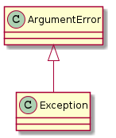

ArgumentError |
An exception to raise if there is a command-line argument error |
UNITS = {'bits': UnitNames.bits,
'kbits': UnitNames.kbits,
'mbits': UnitNames.mbits,
'gbits': UnitNames.gbits,
'bytes': UnitNames.bytes,
'kbytes': UnitNames.kbytes,
'mbytes': UnitNames.mbytes,
'gbytes': UnitNames.gbytes}
enable_debugging() |
enables the pudb debugger |
pipe(args[, infile, outfile]) |
Reads input from standard in and sends output to standard out. |
analyze(args) |
Reads data from files and outputs to files |
main() |
parses the arguments and sends them to ‘pipe’ or ‘analyze’ |